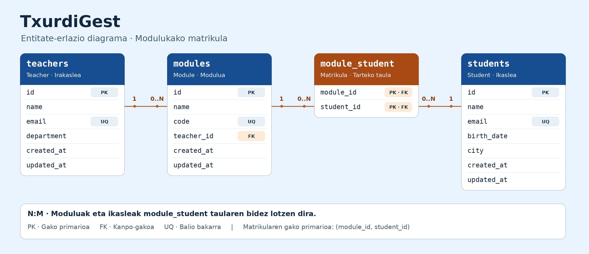

TxurdiGest · Proiektua sortu
TxurdiGest LHko ikastetxe baten kudeaketa-aplikazioa da. Ariketa gidatuan modulukako matrikula egingo dugu. Jon ikaslearen fitxan zer modulutan dagoen matrikulatuta ikusiko dugu. Moduluaren fitxan, berriz, irakaslea eta matrikulatutako ikasleak ikusiko ditugu.
| Entitatea | Modeloa | Taula | Hasierako eremuak |
|---|---|---|---|
| Ikaslea | Student |
students |
id, name, email, denbora-markak |
| Irakaslea | Teacher |
teachers |
id, name, email, denbora-markak |
| Modulua | Module |
modules |
id, name, code, teacher_id, denbora-markak |
| Matrikula | — | module_student |
module_id, student_id |
Irakasle batek modulu bat baino gehiago izan dezake (1:N). Ikasle batek modulu bat baino gehiago izan dezake eta modulu batek ikasle bat baino gehiago (N:M). Ariketan matrikulak ikasturte bakarrekoak dira. Gelan datu asmatuak erabiliko ditugu.

Laravel 13 instalatu
Ireki terminala proiektua gorde nahi duzun karpetan. Egiaztatu terminalak PHP 8.3 edo berriagoa eta Composer aurkitzen dituela.
php -v
composer --version
composer create-project laravel/laravel txurdigest "^13.0"
cd txurdigest
php artisan --version
php artisan serve
Laravel instalatzailea erabiltzen baduzu, beste aukera bat da composer global require laravel/installer eta gero laravel new txurdigest exekutatzea. Aukeratu starter kit gabeko instalazioa eta egiaztatu php artisan --version aginduarekin 13.x dela.
Lehen ibilbidea, kontroladorea eta Blade bista
php artisan make:controller HomeController
routes/web.php
<?php
use App\Http\Controllers\HomeController;
use Illuminate\Support\Facades\Route;
Route::get('/', [HomeController::class, 'index'])->name('home');
app/Http/Controllers/HomeController.php
<?php
namespace App\Http\Controllers;
use Illuminate\View\View;
class HomeController extends Controller
{
public function index(): View
{
return view('home.index');
}
}
Sortu karpetak eta fitxategiak ondoko bideetan.
resources/views/layouts/app.blade.php
<!doctype html>
<html lang="eu">
<head>
<meta charset="utf-8">
<meta name="viewport" content="width=device-width, initial-scale=1">
<title>@yield('title', 'TxurdiGest') · TxurdiGest</title>
<link rel="stylesheet" href="{{ asset('css/app.css') }}">
</head>
<body>
<header>
<nav aria-label="Nabigazio nagusia">
<a href="{{ route('home') }}">TxurdiGest</a>
<!-- Hemen nabigazio menua jarriko dugu -->
</nav>
</header>
<main>
@yield('content')
</main>
<footer>FP Txurdinaga</footer>
</body>
</html>
resources/views/home/index.blade.php
@extends('layouts.app')
@section('title', 'Hasiera')
@section('content')
<h1>TxurdiGest</h1>
<p>Kudeatu ikasleak, irakasleak, moduluak eta matrikulak.</p>
@endsection
public/css/app.css
body {
max-width: 65rem;
margin: auto;
padding: 1rem;
font: 1rem/1.6 system-ui, sans-serif;
color: #172533;
}
nav, .pagination {
display: flex;
flex-wrap: wrap;
gap: 1rem;
}
main { margin-block: 2rem; }
footer { border-top: 1px solid #cbd5e1; padding-top: 1rem; }
label { display: block; margin-top: .75rem; }
input, select, button { font: inherit; }
button { margin-top: .75rem; }
.error { color: #a31324; }
Azaleko testua agertzen bada eta php artisan route:list aginduak home ibilbidea erakusten badu, datu-basearekin has gaitezke.